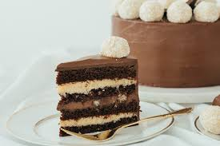
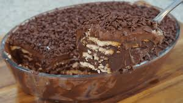
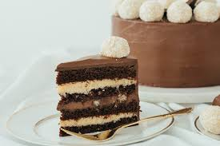
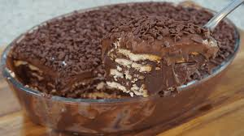

Receita de cookies americanos
O cookie americano perfeito é uma verdadeira obra-prima, combinando crocância externa com maciez interna, garantindo uma explosão de sabor a cada mordida

O cookie americano perfeito é uma verdadeira obra-prima, combinando crocância externa com maciez interna, garantindo uma explosão de sabor a cada mordida

 


